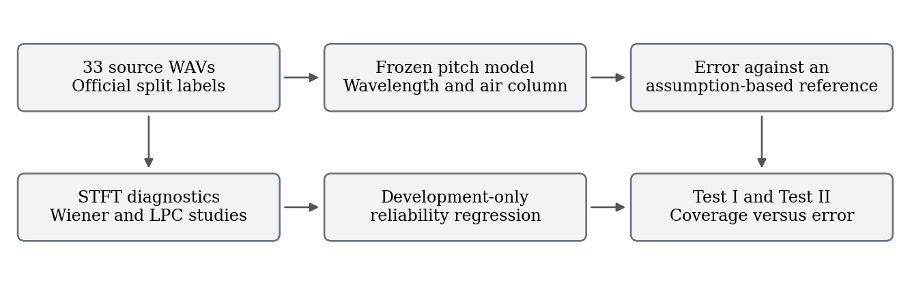
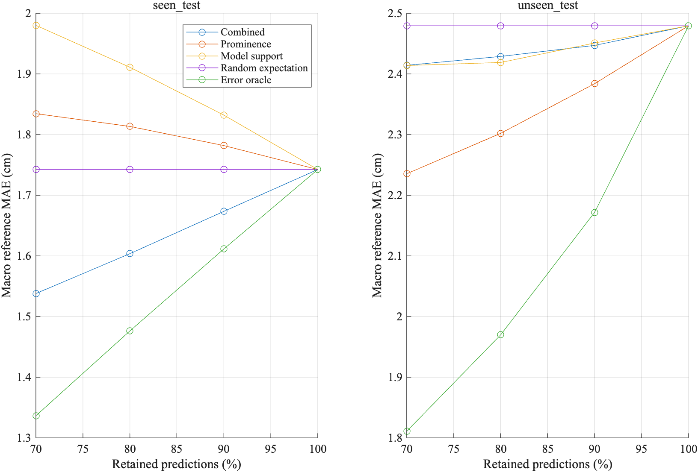
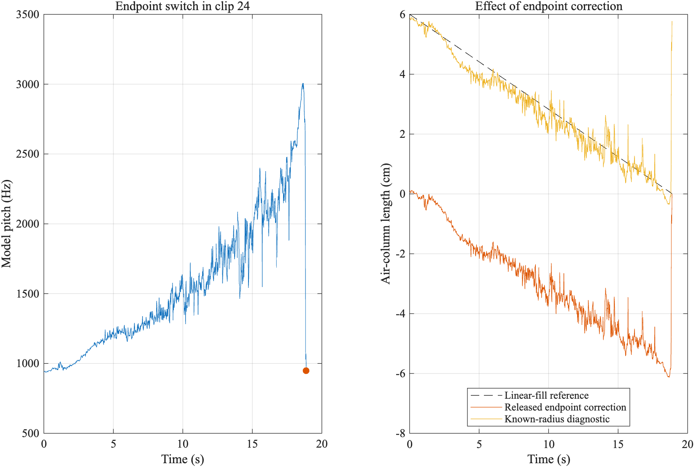

What the error means. Results compare estimated air-column length with an assumption-derived filling reference. This study has no independently measured liquid-level trajectories, so the reported errors do not establish real liquid-level accuracy.
From acoustic evidence to reliability
A smooth-looking resonance does not guarantee a correct physical estimate. This study asks whether interpretable spectral features can identify less reliable portions of a recording, and where that approach fails.
A frozen predictor, an interpretable score
The pretrained Sound of Water network supplies pitch-related predictions. Five acoustic features describe peak prominence, competing peaks, frame-to-frame continuity, spectral entropy and support near the model frequency. A regularized score is fitted only on development recordings.
Keep the container groups separate
The selected set contains 11 development clips, 8 seen-container test clips, 8 unseen-container test clips and 6 shape diagnostics. Test targets are not used to fit the score. Results average recordings equally; uncertainty is assessed by resampling containers.

Selection helps on seen containers
At 70% frame retention, the combined score reduces reference error on the seen subset. Evidence for an improvement on unseen containers is inconclusive.
| Held-out group | Full-coverage MAE | MAE at 70% retention | Paired change · 95% interval |
|---|---|---|---|
| Seen · 8 recordings | 1.742 cm | 1.538 cm | −0.204 [−0.274, −0.134] cm |
| Unseen · 8 recordings | 2.479 cm | 2.414 cm | −0.065 [−0.158, +0.031] cm |
Equal-recording means; 2,000 paired container bootstrap resamples. Negative change means lower error. Retention is the fraction of frames kept using acoustic scores, not a confidence probability.

One endpoint can shift the whole trajectory
The physical conversion subtracts the model's final wavelength estimate. A pitch switch at that endpoint can introduce a global offset, even when much of the earlier acoustic ridge looks plausible.

Geometry changes the reference
For tapered containers, a constant-volume filling model changes the assumed reference curve. Lower disagreement under that alternative is sensitivity to a reference assumption; the underlying prediction has not improved.
Controlled tests clarify the limits
A two-resonator LPC control tests known frequency recovery. Wiener experiments quantify noise reduction and peak distortion. Coarse frequency pooling illustrates loss of competing-peak detail, without claiming a validated perceptual model.
Compare noise removal and listening quality
The controlled comparison uses a six-second pouring excerpt, a fixed 10 dB noise condition and two Wiener filtering variants. Four shared-gain audio files are generated locally during setup.
Four versions of the same excerpt
- Original pouring segment
- Added Gaussian noise
- Estimated Wiener filtering
- Oracle Wiener filtering
After preparing the project, run R = run_project(true); in MATLAB to hear the originals and processed comparison sequentially. Use a comfortable listening volume.
What the listener reported
One informal, unblinded listener reported clear noise in version 2, clear water sound in version 3, intermittent sound in version 4 and no obvious difference between versions 1 and 3.
The oracle uses clean-signal information and is a diagnostic benchmark. These observations are not a controlled listening study or evidence of zero distortion.
Run the complete analysis
Source metadata, cached model predictions and reproducible analysis code are included. One setup command fetches the original public recordings, checks their hashes and recreates all experiment inputs. No neural-network checkpoint is needed for the normal analysis.
One entry point
- Download the repository ZIP and extract it.
- Follow the one-time Python setup to download and verify data.
- Select the project root as MATLAB Current Folder and run the command below.
R = run_project;Add listening with run_project(true). Use run_project(false, false) for a numerical run without figure windows.
Recorded execution, explicit checks
The numerical helpers were executed in base MATLAB R2025b Update 6. The recorded four-table audit shows agreement with the independent Python reference within explicit tolerances. Summary tables and selected figures are retained; full frame tables are regenerated locally.
The standalone entry point calls those unchanged helpers and passed static checks; this new wrapper has not itself been executed in MATLAB in the packaging environment. Python also provides bootstrap, development-fold and endpoint analyses.
Inspect one recording and verify the project
After setup, inspect a held-out case with the frozen reliability score. The output separates acoustic selection from reference-error evaluation.
python python/demo_recording.py --clip clip_24
python python/verify_project.py --with-dataThree-case demonstration and listening guide ↗ · Project summary ↗ · Automated verification ↗
Sources and contribution
This project builds on Bagad et al., The Sound of Water: Inferring Physical Properties from Pouring Liquids, IEEE TPAMI, 2026. The source recordings and pretrained network belong to their original contributors. This project's contribution is the acoustic reliability analysis, controlled experiments, failure diagnosis and reproducible evaluation.
Upstream code · Dataset · Model weights · Attribution and notices